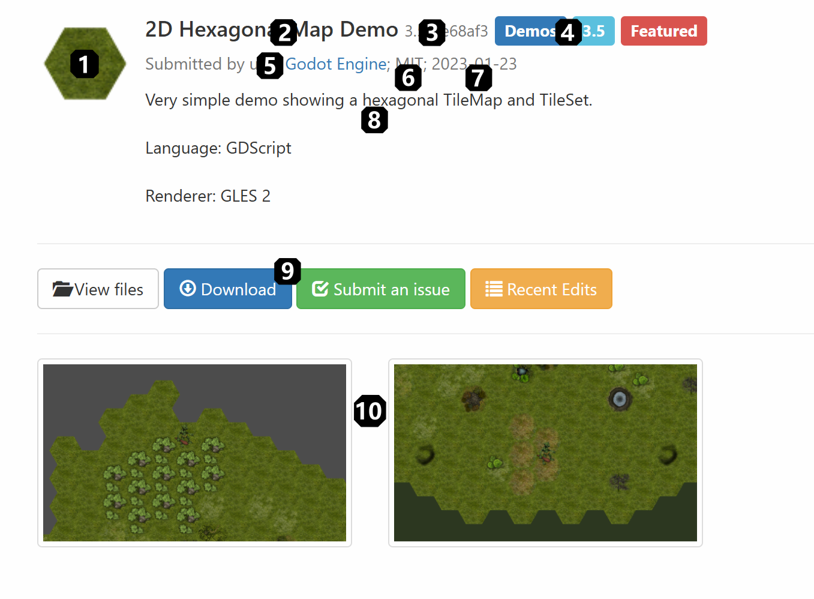
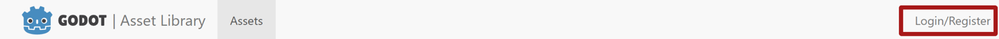
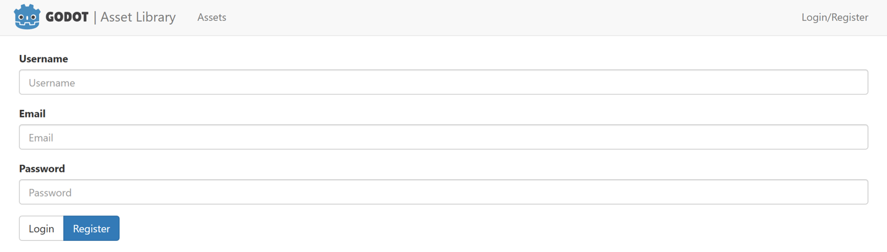
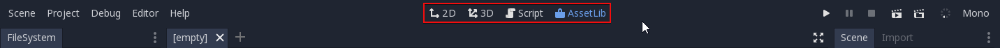
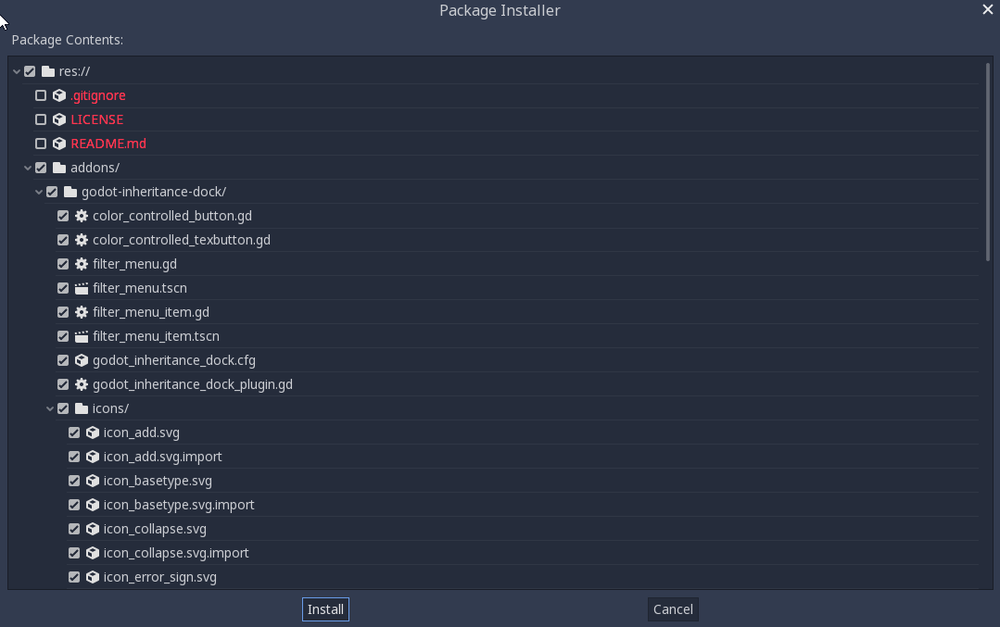
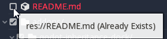

Sử dụng Asset Library
Trên trang web
Tổng quan
Như đã đề cập, bạn có thể truy cập giao diện web của Asset Library trên trang web chính thức của Godot. Đây là giao diện khi bạn truy cập lần đầu:

Ở trên cùng là thanh tiêu đề, đưa bạn đến nhiều phần khác của AssetLib - hiện tại nó trống vì chúng ta chưa đăng nhập.
Tìm kiếm
Ở thanh bên trái là phần thanh tìm kiếm + cài đặt, còn phần assets chiếm vùng nội dung chính bên phải. Bên dưới thanh tìm kiếm, bạn có thể lọc asset theo danh mục (như công cụ 2D, script và demo), mức hỗ trợ, phiên bản engine và giấy phép. Bạn cũng có thể thay đổi thứ tự sắp xếp để sắp xếp theo giấy phép, tên hoặc ngày cập nhật.
Dù hầu hết các cài đặt lọc khác khá dễ hiểu, "mức hỗ trợ" trong Asset Library có ý nghĩa gì thì đáng để điểm qua. Hiện có ba mức hỗ trợ, và mỗi asset chỉ có thể thuộc về một mức.
Asset Featured là các tài nguyên được tuyển chọn thủ công, được ghi nhận vì giá trị của chúng đối với cộng đồng.
Asset Community được gửi và bảo trì bởi các thành viên trong cộng đồng Godot.
Asset Testing là các sản phẩm đang phát triển, có thể chứa lỗi và vấn đề về khả năng sử dụng. Chúng không được khuyến nghị dùng trong các dự án nghiêm túc, nhưng bạn được khuyến khích tải xuống, thử nghiệm và báo cáo issue cho tác giả gốc.
Bạn có thể kết hợp tùy ý mọi bộ lọc và tiêu chí tìm kiếm, và khi nhấn nút Search, bạn sẽ nhận được danh sách mọi asset trong Library khớp với chúng.

Lưu ý rằng kết quả tìm kiếm không được cập nhật theo thời gian thực, vì vậy bạn sẽ phải gửi lại truy vấn tìm kiếm mỗi khi thay đổi cài đặt truy vấn.
Phân tích một asset
Bây giờ hãy xem trang của một asset trông như thế nào và chứa những gì.

Ảnh thu nhỏ/biểu tượng của asset.
Tên của asset.
Số phiên bản hiện tại của asset.
Danh mục, phiên bản Godot và trạng thái hỗ trợ của asset.
Tác giả gốc/người gửi asset.
Giấy phép mà asset được phân phối theo.
Ngày chỉnh sửa/cập nhật gần nhất của asset.
Phần mô tả bằng văn bản của asset.
Các liên kết liên quan đến asset (liên kết tải xuống, danh sách tệp, trình theo dõi issue).
Hình ảnh và video giới thiệu asset.
Đăng ký và đăng nhập
Để tải asset lên AssetLib, bạn cần đăng nhập, và để làm vậy, bạn cần một tài khoản người dùng đã đăng ký. Trong tương lai, tài khoản này cũng có thể cho phép bạn truy cập các tính năng khác, như bình luận hoặc đánh giá các asset hiện có. Bạn không cần đăng nhập để duyệt và tải asset.
Có thể truy cập trang đăng nhập/đăng ký từ thanh tiêu đề của AssetLib.

Tại đây, bạn có thể đăng ký tài khoản, việc này yêu cầu một địa chỉ email hợp lệ, một tên người dùng và một mật khẩu (tốt nhất là mạnh).

Sau đó, bạn có thể dùng tên người dùng và mật khẩu để đăng nhập.

Việc này sẽ thay đổi giao diện thanh tiêu đề của AssetLib. Giờ bạn có thể truy cập một số chức năng mới:
Bảng tin, hiển thị danh sách các cập nhật trạng thái về những asset bạn đã gửi (và có thể nhiều hơn trong tương lai).
Danh sách các asset bạn đã tải lên.
Khả năng gửi asset mới.

Bạn có thể tìm hiểu cách gửi asset lên Library, cũng như các nguyên tắc gửi asset, trong phần tiếp theo của bài hướng dẫn này, Gửi lên Asset Library.
Trong trình chỉnh sửa
Ghi chú
Trình chỉnh sửa sẽ hiển thị các danh mục asset khác nhau tùy theo bạn đang duyệt tab Asset Library Projects của Project Manager hay tab AssetLib của trình chỉnh sửa.
Tab Asset Library Projects của Project Manager chỉ hiển thị những asset là dự án độc lập. Điều này được thể hiện trên asset library bằng các danh mục Templates, Demos và Projects.
Tab AssetLib của trình chỉnh sửa chỉ hiển thị những asset không phải là dự án độc lập. Nói cách khác, nó hiển thị asset từ mọi danh mục ngoại trừ Templates, Demos và Projects.
Bạn cũng có thể truy cập AssetLib trực tiếp từ Godot:


Nhấn vào đó, Godot sẽ lấy thông tin về các asset từ AssetLib. Khi hoàn tất, bạn sẽ thấy một cửa sổ tương tự như trang web AssetLib, với một vài khác biệt:

Tương tự như phiên bản web của AssetLib, tại đây bạn có thể tìm asset theo danh mục, theo tên, và sắp xếp chúng theo các yếu tố như tên hoặc ngày chỉnh sửa.
Đáng chú ý, bạn chỉ có thể lấy asset cho phiên bản Godot hiện tại mà bạn đang chạy. Projects, Demos và Templates có thể được tải xuống từ giao diện AssetLib trong Project Manager. Addon (công cụ, script, material, v.v.) có thể được tải xuống từ AssetLib bên trong dự án và thêm vào dự án hiện tại. Ngoài ra, khác với khi dùng giao diện web, kết quả tìm kiếm được cập nhật theo thời gian thực (bạn không cần nhấn Search sau mỗi lần thay đổi truy vấn tìm kiếm để thay đổi có hiệu lực).
Trong tương lai, bạn sẽ có thể chọn một nhà cung cấp AssetLib khác để lấy asset (bằng menu thả xuống Site), tuy nhiên hiện chỉ có phiên bản AssetLib trên trang web Godot chính thức được hỗ trợ, cùng với phiên bản có thể đang chạy trên máy chủ web cục bộ của bạn (tùy chọn localhost).
Khi nhấn vào một asset, bạn sẽ thấy thêm thông tin về nó.

Nếu nhấn nút Install, Godot sẽ tải về một tệp nén của asset và theo dõi tiến trình tải xuống ở cuối cửa sổ trình chỉnh sửa. Nếu tải xuống thất bại, bạn có thể thử lại bằng nút Retry.

Khi tải xong, bạn có thể tiến hành cài đặt bằng nút Install. Thao tác này sẽ mở cửa sổ Package Installer.

Tại đây bạn có thể thấy danh sách mọi tệp sẽ được cài đặt. Bạn có thể bỏ chọn bất kỳ tệp nào không muốn cài, và Godot cũng sẽ thông báo cho bạn về các vấn đề với những tệp mà nó không thể cài đặt. Các tệp này sẽ được hiển thị màu đỏ, và khi di chuột lên chúng, bạn sẽ thấy thông báo giải thích lý do không thể cài đặt.

Khi đã xong, bạn có thể nhấn nút Install, thao tác này sẽ giải nén mọi tệp trong tệp nén và import mọi asset chứa trong đó, như hình ảnh hoặc mô hình 3D. Khi hoàn tất, bạn sẽ thấy thông báo cho biết việc cài đặt gói đã hoàn thành.

Bạn cũng có thể dùng nút Import để import các tệp nén asset có được từ nơi khác (chẳng hạn tải trực tiếp từ giao diện web của AssetLib), thao tác này sẽ đưa bạn qua cùng quy trình cài đặt gói như với các asset được tải trực tiếp qua Godot mà chúng ta vừa đề cập.